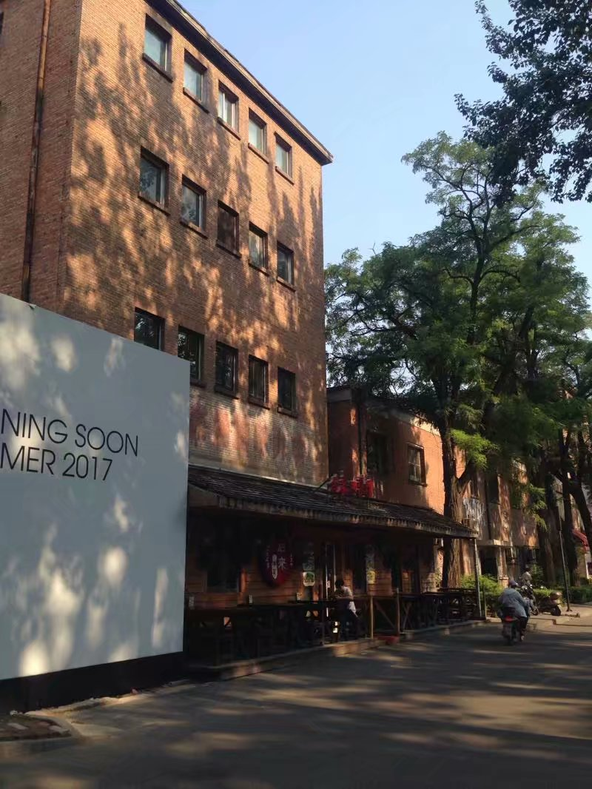

没有一点点计划，下午在睡梦中，被大哥一个电话响醒，说要带我去帝都。
稀里哗啦收拾了点洗漱用品、换洗衣服，背着小包出发了。
半夜两点到达北京，大马路上好安静，只有几个刚下飞机的行人，稀稀拉拉，有点恐怖。
到了酒店安顿好差不多三点了，第二天睡饱，晃晃悠悠查了查攻略，就开始了懒懒散散的北京游。
这已经不是第一次来北京玩了，而且这次北京行是有任务滴，所以我们玩的很轻松。
走了走北京的老胡同，逛了逛南锣鼓巷、后海、烟斜口袋、鸟巢、天安门、博物馆。

本想去清华、北大去看看，结果进不去，就在外边转了转。
此时的天气还不算很热，人也不多，总体算是一次轻松慢节奏的游京城吧。
帝都虽好，心在青岛。